Candidate List 20261019Last night — ZTF: 2,650 passed basic cuts (51 young) · LSST: 0 passed basic cuts (0 young)Previous Day Next Day
Section 1: New Sources (age<1d) Section 2: Old (1-5d) sources observed last nightplaceholder
Section 1: New Afterglow/FBOT Cands Last Night (0)
Section 2: Older Sources Observed Last Night (9)
0. [ZTF] ZTF26acbhyhl (FBOT?) [Back to Top] [Share] [Trigger Swift] [Fritz Alert] [Fritz Source] [Lasair]RA, Dec: 359.02673, -12.81461 23h56m6.41s, -12d-48m-52.58sGalactic (l, b): 78.07914, -70.69778 ext(g-r) = 0.033


TESS: Sectors [ 2 29 69 70 92 107]
PS1: 0 sources in 3 arcsec
LegacySurvey: 1 sources in 3 arcsec Closest: d = 0.62 arcsec, 124.1 deg (east of north) photoz=0.12 (68% bounds 0.09, 0.17), type=EXP peak abs mag (ext. corrected) = -19.65 (68% bounds -18.85, -20.45)

Extinction-corrected gr color:
From alerts: 0.13 +/- 0.24 mag
Extinction-corrected gi color:
From alerts: -0.42 +/- 0.24 mag
Extinction-corrected ri color:
From alerts: -0.55 +/- 0.25 mag
Consistent with synchrotron, g-r>0!
Rise Rate:
g: 0.17 mag/day
r: 0.33 mag/day
Fade Rate:
1. [ZTF] ZTF26acbepnu (FBOT?) [Back to Top] [Share] [Trigger Swift] [Fritz Alert] [Fritz Source] [Lasair]RA, Dec: 62.29445, -5.99462 4h 9m10.67s, -5d-59m-40.64sGalactic (l, b): 197.9656, -38.55199 ext(g-r) = 0.078


TESS: Sectors [ 5 32 109 110]
SDSS (<15 kpc):Found SDSS phot-z: z=0.42; peak abs mag = -23.27
NED host (10 arcsec):Found WISEA J040910.54-055947.0 (G, 6.7″); NED spec-z: z=0.0382 [zflag SLS]; peak abs mag = -17.62
PS1: 0 sources in 3 arcsec
LegacySurvey: 1 sources in 3 arcsec Closest: d = 0.40 arcsec, 107.8 deg (east of north) photoz=0.05 (68% bounds 0.01, 0.23), type=EXP peak abs mag (ext. corrected) = -18.27 (68% bounds -15.03, -21.78)

Extinction-corrected gr color:
From alerts: 0.1 +/- 0.11 mag
Extinction-corrected gi color:
From alerts: 0.05 +/- 0.12 mag
Extinction-corrected ri color:
From alerts: -0.05 +/- 0.12 mag
Consistent with synchrotron, g-r>0!
Rise Rate:
g: 0.24 mag/day
r: 0.17 mag/day
i: 0.13 mag/day
Fade Rate:
2. [ZTF] ZTF26acbezdh (Afterglow?) [Back to Top] [Share] [Trigger Swift] [Fritz Alert] [Fritz Source] [Lasair]RA, Dec: 42.17137, 14.30625 2h48m41.13s, 14d18m22.48sGalactic (l, b): 161.02309, -39.73958 WARNING: -1.84 deg from ecliptic plane ext(g-r) = 0.111


TESS: Sectors [42 43 44 70 71]
PS1: 0 sources in 3 arcsec
LegacySurvey: 1 sources in 3 arcsec Closest: d = 6.24 arcsec, 91.9 deg (east of north) photoz=0.02 (68% bounds 0.01, 0.05), type=REX peak abs mag (ext. corrected) = -17.23 (68% bounds -15.86, -19.5)

Extinction-corrected gr color:
From alerts: -0.05 +/- 0.06 mag
Extinction-corrected gi color:
From alerts: -0.35 +/- 0.08 mag
Extinction-corrected ri color:
From alerts: -0.3 +/- 0.07 mag
Consistent with synchrotron, g-r>0!
Rise Rate:
g: 0.49 mag/day
r: 2.96 mag/day
i: 0.41 mag/day
Fade Rate:
r: 0.83 mag/day
3. [ZTF] ZTF26acbskgz (FBOT?) [Back to Top] [Share] [Trigger Swift] [Fritz Alert] [Fritz Source] [Lasair]RA, Dec: 28.23443, 30.29871 1h52m56.26s, 30d17m55.36sGalactic (l, b): 138.37563, -30.72203 ext(g-r) = 0.053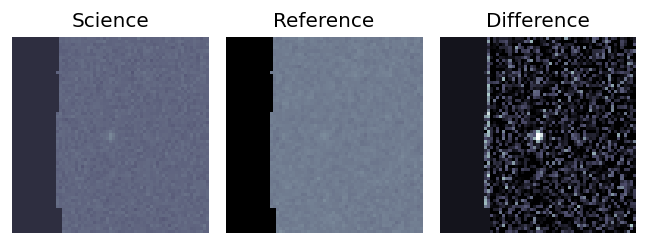
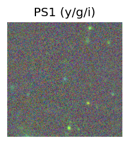
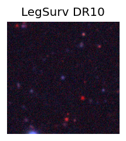
TESS: Sectors [58 85]
PS1: 0 sources in 3 arcsec
LegacySurvey: 1 sources in 3 arcsec Closest: d = 0.28 arcsec, 99.1 deg (east of north) photoz=0.23 (68% bounds 0.15, 0.43), type=REX peak abs mag (ext. corrected) = -20.42 (68% bounds -19.34, -21.98)
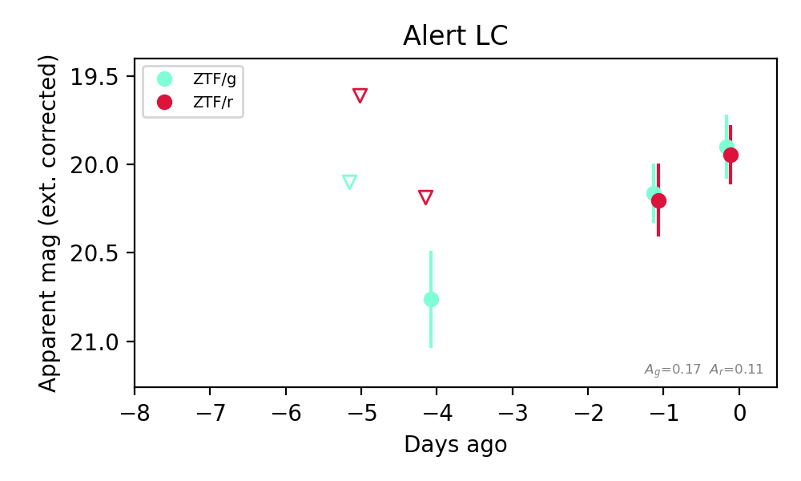
Extinction-corrected gr color:
From alerts: -0.05 +/- 0.25 mag
Consistent with synchrotron, g-r>0!
Rise Rate:
g: 0.22 mag/day
r: 0.04 mag/day
Fade Rate:
4. [ZTF] ZTF26acbsqrq (FBOT?) [Back to Top] [Share] [Trigger Swift] [Fritz Alert] [Fritz Source] [Lasair]RA, Dec: 50.17681, 1.81728 3h20m42.43s, 1d49m2.22sGalactic (l, b): 180.11929, -43.86667 ext(g-r) = 0.136


TESS: Sectors [ 4 31 109]
PS1: 0 sources in 3 arcsec
LegacySurvey: 1 sources in 3 arcsec Closest: d = 1.38 arcsec, 308.7 deg (east of north) photoz=1.02 (68% bounds 0.23, 1.5), type=REX peak abs mag (ext. corrected) = -25.15 (68% bounds -21.33, -26.18)

Extinction-corrected gr color:
From alerts: -0.21 +/- 0.15 mag
Rise Rate:
g: 0.18 mag/day
r: 0.26 mag/day
Fade Rate:
5. [ZTF] ZTF26acbujyo (FBOT?) [Back to Top] [Share] [Trigger Swift] [Fritz Alert] [Fritz Source] [Lasair]RA, Dec: 47.90869, -2.02672 3h11m38.09s, -2d-1m-36.18sGalactic (l, b): 182.1716, -48.09619 ext(g-r) = 0.069


TESS: Sectors [ 4 31 109]
NED host (10 arcsec):Found KUG 0309-022 (G, 1.8″); NED spec-z: z=0.0573 [zflag SUN]; peak abs mag = -19.32
PS1: 0 sources in 3 arcsec
LegacySurvey: 1 sources in 3 arcsec Closest: d = 1.24 arcsec, 22.0 deg (east of north) photoz=0.07 (68% bounds 0.01, 0.09), type=SER peak abs mag (ext. corrected) = -19.74 (68% bounds -16.28, -20.28)

Extinction-corrected gr color:
From alerts: -0.3 +/- 0.09 mag
Extinction-corrected gi color:
From alerts: -0.56 +/- 0.1 mag
Extinction-corrected ri color:
From alerts: -0.26 +/- 0.1 mag
Rise Rate:
g: 0.49 mag/day
r: 0.23 mag/day
i: 0.37 mag/day
Fade Rate:
6. [ZTF] ZTF26acbuqpg (Afterglow?) [Back to Top] [Share] [Trigger Swift] [Fritz Alert] [Fritz Source] [Lasair]RA, Dec: 53.41942, 3.26192 3h33m40.66s, 3d15m42.90sGalactic (l, b): 181.51681, -40.47423 ext(g-r) = 0.15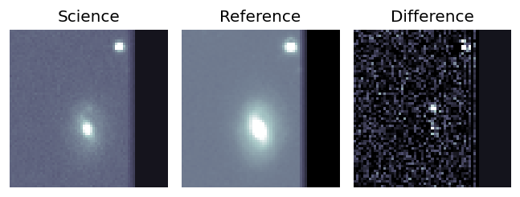
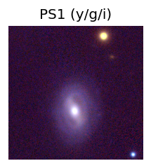
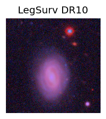
TESS: Sectors [ 31 109]
NED photo-z only: WISEA J033340.72+031534.3 (G, 8.6″) z=0.0281 [zflag PUN] — not used for peak abs mag
PS1: 0 sources in 3 arcsec
LegacySurvey: 0 sources in 3 arcsec
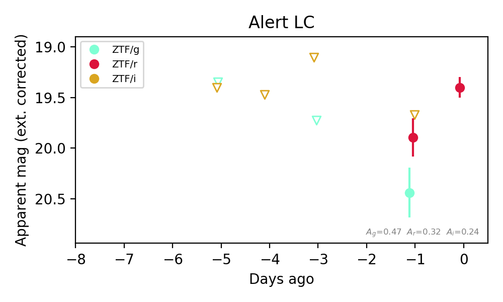
Extinction-corrected gr color:
From alerts: 0.54 +/- 0.31 mag
Extinction-corrected gi color:
From alerts: 0.77 +/- 99 mag
Extinction-corrected ri color:
From alerts: 0.22 +/- 99 mag
Consistent with synchrotron, g-r>0!
Rise Rate:
r: 0.51 mag/day
Fade Rate:
7. [ZTF] ZTF26acbwcfi (FBOT?) [Back to Top] [Share] [Trigger Swift] [Fritz Alert] [Fritz Source] [Lasair]RA, Dec: 113.41472, 28.50158 7h33m39.53s, 28d30m5.68sGalactic (l, b): 190.8049, 21.15302 ext(g-r) = 0.044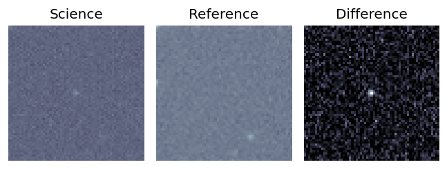
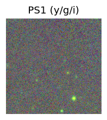
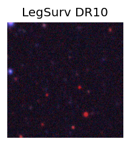
TESS: Sectors [20 44 45 46 47 71 72]
SDSS (<15 kpc):Found SDSS phot-z: z=0.55; peak abs mag = -22.37
PS1: 0 sources in 3 arcsec
LegacySurvey: 1 sources in 3 arcsec Closest: d = 0.06 arcsec, 352.4 deg (east of north) photoz=0.49 (68% bounds 0.35, 0.79), type=REX peak abs mag (ext. corrected) = -22.08 (68% bounds -21.21, -23.35)
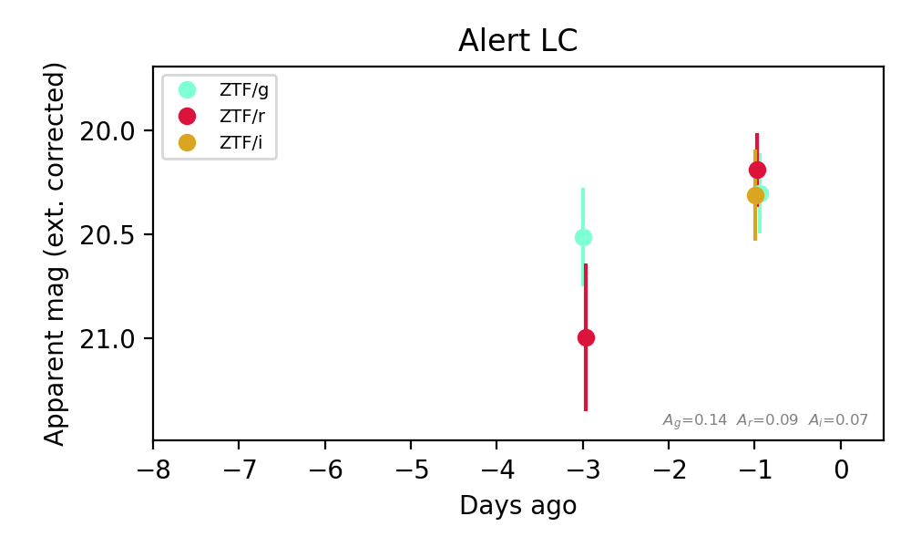
Extinction-corrected gr color:
From alerts: 0.11 +/- 0.26 mag
Extinction-corrected gi color:
From alerts: -0.01 +/- 0.29 mag
Extinction-corrected ri color:
From alerts: -0.12 +/- 0.28 mag
Consistent with synchrotron, g-r>0!
Rise Rate:
r: 0.4 mag/day
Fade Rate:
8. [ZTF] ZTF26accblpv (FBOT?) [Back to Top] [Share] [Trigger Swift] [Fritz Alert] [Fritz Source] [Lasair]RA, Dec: 48.32523, 24.72672 3h13m18.05s, 24d43m36.21sGalactic (l, b): 159.53292, -27.88301 ext(g-r) = 0.184


TESS: Sectors [18 42 43 44 70 71]
PS1: 1 source in 3 arcsec Closest: d = 0.69 arcsec photoz=0.57+/-0.58 peak abs mag = -22.83
LegacySurvey: 0 sources in 3 arcsec

Extinction-corrected gr color:
From alerts: 0.07 +/- 0.24 mag
Extinction-corrected gi color:
From alerts: -0.09 +/- 0.25 mag
Extinction-corrected ri color:
From alerts: -0.16 +/- 0.22 mag
Consistent with synchrotron, g-r>0!
Rise Rate:
g: 0.17 mag/day
r: 0.28 mag/day
Fade Rate: